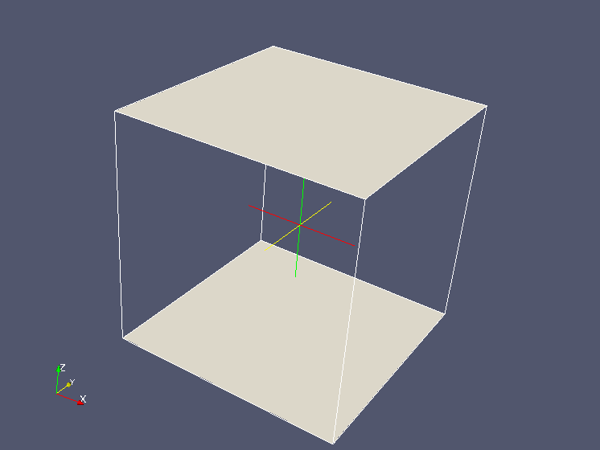
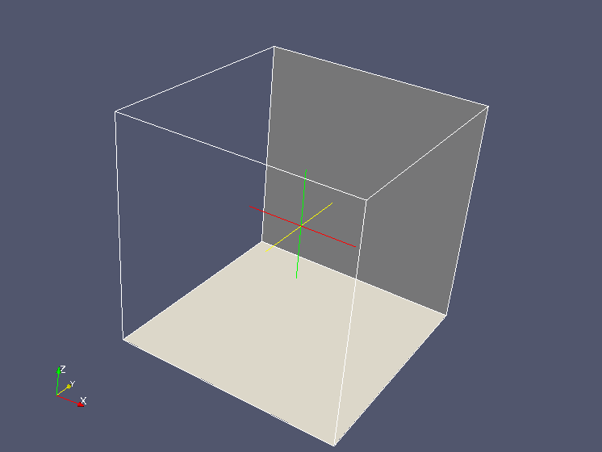
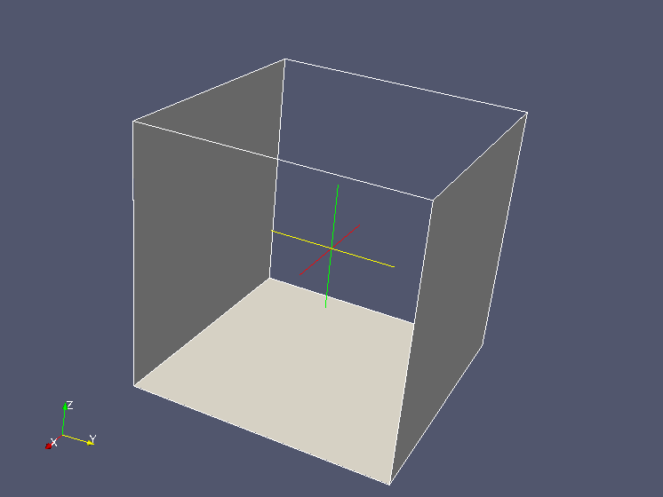
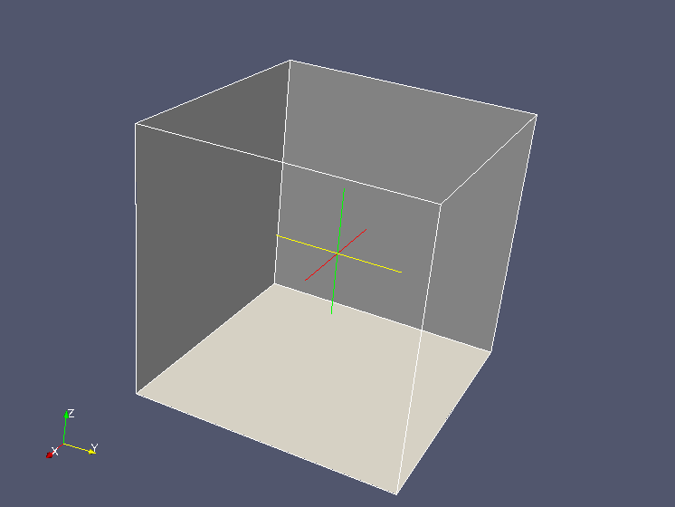
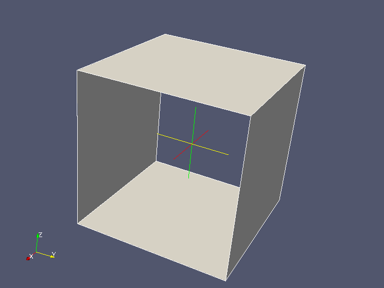
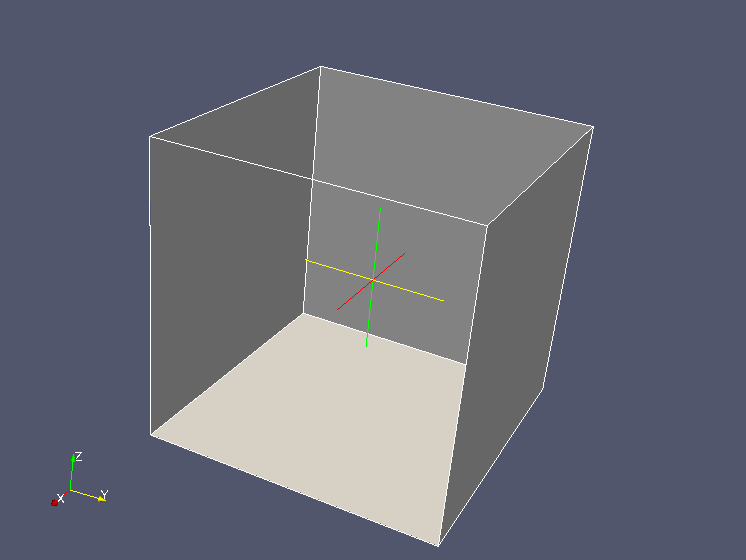
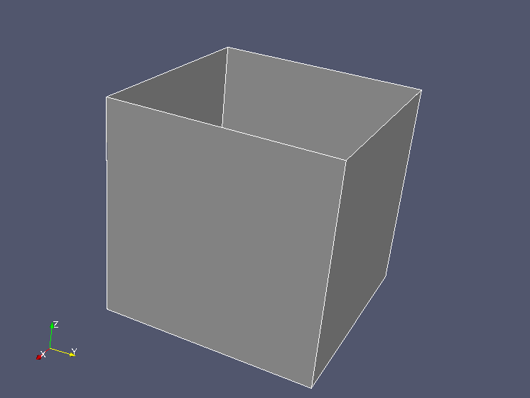

HexaBlock
Bibliothèque de formes
Documentation interne du moteur
Ce document constitue la documentation interne du composant HEXABLOCK.
Ce
document fait partie des sources du projet et est géré en
configuration Pour le mettre à jour, utiliser kompozer, disponible sur
Linux
 Table of contents :
Table of contents :
See also :
Partie 1 : prévisualisation des éléments créés
Pour
que SALOME puisse prévisualiser le "document" en cours de modivication,
il est nécessaire de créer une copie de l'original. L'évolution
majeure du moteur consiste à implémenter une fonction de
copie.
Ce qui revient à ajouter dans la classe Document la méthode suivante :
| Document* copyDocument ();
|
La valeur rendue est le document copié.
Les éléments copiés sont les éléments
intrinsèques du document : vertices, edges, quadrangles, hexaèdres,
lois. Qui sont aussi ceux sauvegardés dans un texte XML. On ne stocke
pas les éléments intermédiaires de construction (grilles, vecteurs,
etc...).
Cette rège pourra être remise en cause si l'application interactive a besoin d'autres informations.
La copie se déroule ainsi :
- Chaque élément dispose d'un champ (nommé clone) qui permet de mémoriser l'adresse du dernier élément copié à partir de cet élément dans le cadre de la copie de document.
- Copier les
éléments de bas niveau (les vertices) : méthode Vertex::duplicate(Document* cible). Cette méthode ne rend pas de pointeur ; elle crée un clone du sommet courant et le mémorise sur le champ clone de la classe Vertex.
- Copier les éléments présents de plus haut niveau dans l'ordre (edges, quads, hexas) : méthode virtuelle EltBase::duplicate ()
- Si
un élément utilise n éléments de plus bas niveau, sa copie utilise les
copies des éléments utilisés. Il est aisé de retrouver la copie car on
en a stocké l'adresse.
- Détail
: la méthode duplicate n'a pas besoin d'argument de type Document* elle
reprend le document cible des éléments de plus bas niveau..
- Copier les lois
Les associations sont copiées lors de la copie de chaque élément.
Retour au début
Partie 2 : Nouvelles fonctions de construction
 2.1 Création d'Hexaèdres
2.1 Création d'Hexaèdres
Il s'agit de construire un hexaèdre à partir de quadrangles déjà créés dans le
modèle de blocs. Cet hexaèdre est produit à partir des 4 cas suivants :
- à partir de 2 quadrangles reliés ou pas,
- à partir de 3 quadrangles tous reliés,
- à partir de 4 quadrangles tous reliés,
- à partir de 5 quadrangles tous reliés.
Les points d'entrée sont naturellement :
Hexa* addHexa2Quads (Quad* q1, Quad* q2);
Hexa* addHexa3Quads (Quad* q1, Quad* q2, Quad* q3);
Hexa* addHexa4Quads (Quad* q1, Quad* q2, Quad* q3, Quad* q4);
Hexa* addHexa5Quads (Quad* q1, Quad* q2, Quad* q3, Quad* q4, Quad* q5); |
Chacun des cas amène une discussion. La démarche est la suivante :
- Les quadrangles passés en argument dans un ordre quelconque.
- Un
analyseur d'intersections (classe AnaQuads,
définie dans
HexAnaQuads.hxx) détermine les arêtes communes aux n quadrangles passés
en argument. et mémorise ces informations qui seront transmises aux
fonctions internes, afin de ne pas répêter ces calculs d'intersection.
- En fonction du nombre d'arêtes communes à chaque quadrangle, on se ramène à 7 cas.
- Si le nombre d'arêtes communes est insuffisant, le cas est rejeté.
- On nomme ces cas en se servant de la nomenclature des faces dans le projet : (A, B, C, D, E,F)
 Rappel : formalisation des Hexaèdres/Quadrangles/Vertex
Rappel : formalisation des Hexaèdres/Quadrangles/Vertex
Pour rappel :
// z=0 z=1
y=0 y=1 x=0 x=1
enum EnumHQuad {Q_A, Q_B, Q_C, Q_D, Q_E, Q_F, HQ_MAXI};
|
La face A est opposée à B, C est opposée à D, E à F. La
position des faces A, C, E normales à Oz, Oy, Ox est purement
théorique. Elle améliore la visualisation. Les orientations sont en
fait interchangeables. On peut intervertir les couples (C,D) et
(E,F), on peut intervertir A et B, C et D, E et F, l'essentiel est
d'avoir une cohérence avec les autres dénominations d'edges (ac,
af, ad ...) ou de sommets (ace, acf, adf ...) et les
conventions de départ.
L'arête située la face X et la face Y est notée xy. Un sommet situé entre les 3 faces X, Y Z est noté xyz :
6=bde +----bd-----+ bdf=7
/| /|
be | B bf |
/ | / |
4=bce +----bc-----+...|...bcf=5
| de D | df
| E | | F
|
z
ce |
C cf
|
^
2=ade...|...+----ad-|---+ adf=3 | y
| / |
/
| /
|
ae A |
af
| /
|/
|/
|/
0=ace +----ac-----+ acf=1 +-----> x
|
La classe AnaQuads
Cette
classe analyse les relations topologiques existant entre plusieurs
quandrangles. Un objet de ce type est créé au début de chaque fonction
addHexaXQuads.
Le constructeur est :
AnaQuads (Quad* q1, Quad* q2, Quad* q3=NULL, Quad* q4=NULL, Quad* q5=NULL);
|
Les champs affectés lors de la construction de l'objet :
| MawQuads | Constante égale à 5 5 |
| int nbr_quads; | Nombre de quadrangles |
| int nbr_aretes; | Nombre total d'arêtes |
| Quad* tab_quads [i]; | Le ième quadrangle passé en argument |
| int inter_nbre [i]; | Nombre d'intersections du ième quadrangle |
| int inter_edge [i][j]; | Nro d'arête de i intersectant le jème quadrangle |
| int inter_quad [i][j]; | Nro de quadrangle présent sur la jème arete du iéme quad |
Création d'un hexaèdre avec deux quadrangles : - La classe AnaQuads ne détecte aucune arête commune : appel à addHexaQuadsAB
- La classe AnaQuads détecte une arête commune : appel à addHexaQuadsAC
 |  |
addHexa2Quads avec 2 quadrangles non reliés.
Fonction : addHexaQuadsAB | addHexa2Quads avec 2 quadrangles reliés.
Fonction : addHexaQuadsAC |
addHexaQuadAB :
Les huits sommets sont présents, il manque quatre arêtes verticales ce, cf, df, de.
La
difficuté consiste à faire correspondre deux à deux les quatre sommets
de chaque quadrangle sans que les arêtes ne se croisent. La situation
est analogue à mergeQuads ou joinQuads, sauf que dans ces cas, on passe
en argument quatre vertex pour déterminer dans ambiguité les sommets
correspondants deux à deux. On a choisi ici
d'automatiser l'association :
- il
existe huit combinaisons permettant d'associer deux à deux les 4
sommets de 2 quadrangles : décalage de 0 à 3 dans un sens puis dans
l'autre.
- Pour chaque combinaison, on calcule la longueur totale des 4 arêtes créées.
- On retient la combinaison qui mène à une longueur minimale.
Une fois la combinaison optimale établie :
- Création
des 4 arêtes verticales en fonction des combinaisons, stockées dans tu
tableau tedge[4]. Le premier vertex fourni est celui de la face A.
- Création des 4 quadrangles verticaux.
- Création de l'hexaèdre.
Pour créer le i-ème quadrangle vertical :
- l'arête verticale de gauche e_left = tedge[i]
- l'arête verticale de droite e_left = tedge[(i+1) modulo 4]
- l'arête
horizontale basse s'obtient grâce à la fonction Quad::findEdge (v1,
v2). On recherche dans le quadrangle A l'arête dont les 2 sommets sont
les extrémités amont des arêtes e_left et e_right, qui par construction
appartiennent au quadrangle A.
- idem pour l'arête haute ; sauf que ce sont les extrémités aval.
addHexaQuadAC :
Deux
faces présentes A et C, une arête commune ac. Il manque deux sommets
bde et bdf à partir des quels on construit les arêtes manquantes bd,
be, de, bf, df.
On doit s'assurer de ma planéité des quadrangles créés.
La
solution n'est pas unique. Il existe une infinité de sommets pouvant
définir un hexaèdre conforme. On se contente ici d'en choisir une
et de démontrer que l'objet créé est conforme.
Le point bde (resp bdf) est construit en
sommant les vecteurs ac et ce (resp af et cf), ce qui revient à
définir un parallélogramme. On assure ainsi sa présence dans le plan E
(resp. F). Les faces créées E et F sont donc planaires.
Pour démontrer la planéité de la face B :
- (ae , af) coplanaires (donnée)
- be = ae (construction d'un parallèlogramme)
- df = af (idem)
- (1), (2), (3) => (be, bf) coplanaires
|
On procéderait de la même manière pour établir que la face D est plane.
La fonction s'écrit ainsi :
- q_a est le premier quadrangle fourni, q_c le second
- L'edge e_ac est défini qrâce à la strucrure AnaQuads
- On effectue un calcul analogue aux deux extrémités s (amont et aval) de e_ac :
- vx1 = extrémité étudiée de e_ac, vx2 l'autre
- vxa
= sommet adjacent de vx1 sur la face A, différent de vx2. Il est
obtenu en prenant le sommet opposé à vx2 sur la face A. L'indice de vxa
dans qa vaut vx2+2 modulo 4.
- de même, vxc = sommet adjacent de vx1 sur la face C.
- Calcul des coordonnées et création du vertex tv_bdx[s] (x représente la choix entre e et f).
- Création des deux arêtes manquantes te_bx[s] et te_dx[s]
- Création des du quadrangle latéral tq_ef [s]
- Création de l'arête e_bd à partir dses deux vertices de tv_bdx
- Création
du quadrangle D à partir de te_dx[], e_ef, te_dx[1] et de l'arête
opposée à e_ac dans A (fonction Quad::getOpposedEdge(e,n)
- Création du quadrangle B à partir de te_bx[], e_ef, te_bx[1] et de
l'arête opposée à e_ac dans C (fonction Quad::getOpposedEdge(e,n)
- Création de l'hexaèdre
Création d'un hexaèdre avec trois quadrangles :
- La
classe AnaQuads détecte deux arêtes communes : appel à
addHexaQuadsACD. La face A sera celle qui possède deux arêtes communes,
la face C la suivante, D la derniére.
- La classe AnaQuads
détecte trois arêtes communes : appel à addHexaQuadsACE. Ce cas est
symétrique, la face A sera la première de la liste, C la seconde.
 |  |
addHexa2Quads avec 3 quadrangles disposés en U.
Fonction : addHexaQuadsACD | addHexa2Quads avec quadrangles disposés en trièdre
Fonction : addHexaQuadsACE |
addHexaQuadACD :
Tous les sommets sont présents. Il reste à créer :
- Les arêtes be et bf
- Les quadrangles E, B, F en déterminant les arêtes qui les constituent.
La difficulté est d'identifier clairement les arêtes et les sommets à partir des quadrangles existant :
- q_a est le quadrangle qui possède deux arêtes communes, q_b et q_c les suivants.
- On exploite les indices d'edges communs fournis par AnaQuads. Rappelons que dans un quadrangle le ième edge est adjacent aux edges i-1 et i+1 et opposé à l'edge i+2.
- e_ac et e_ad sont les intersections de q_a avec q_c et q_d. (nommés ici mais non utilisés dans le programme)
- e_bc est l'arête opposée à e_ac dans q_c, e_bd est l'arête opposée à e_ad dans q_d.
- e_ae
est l'arête suivante de e_ac dans q_a, e_af l'arête précédente.
Ce choix arbitraire détermine les autres dénominations.
- e_ce est l'arête adjacente de e_ac dans q_c qui a un sommet commun (v_ace) avec e_ae.
- e_de est l'arête adjacente de e_ac dans q_d qui a un sommet commun (v_ade) avec e_ae.
- v_acf est le sommet commun à e_af et e_cf
- v_adf est le sommet commun à e_af et e_df
- Création de l'arete e_be à paertir de e_bce et v_bde, puis de l'arête e_bf,
- Créations des quadrangles q_b, q_e, q_f
- Création de l'hexaèdre.
addHexaQuadACE :
Il
est nécessaire de créer le sommet v_bdf. Il est l'intersection des
plans (B, D, F). Chaque plan est défini par trois points présents sur
les autres quadrangles :
- Le plan B est défini par les sommets bcd, bce, bcf . Son vecteur normal norm_b est le produit vectoriel de bc par be.
- Le plan D est défini par les sommets adf, ade, adb. Son vecteur normal norm_d est le produit vectoriel de ac par ae.
- Le
plan F est défini par les sommets adf, acf, bcf. Son vecteur
normal norm_f est le produit vectoriel de ae par ec.
Soit un plan P défini par un point A et un vecteur normal N. Un point M appartient à P si le produit scalaire N.AM est nul
On obtient le système d'équations
- (bdf,bce) . norm_b = 0
- (bdf,ade) . norm_d = 0
- (bdf,acf) . norm_f = 0
|
Equivalent à :
- norme_b[0]*X + norme_b[1]*Y + norme_b[2]*Z = prod_scalaire (v_bce, norm_b)
- norme_d[0]*X + norme_d[1]*Y + norme_d[2]*Z = prod_scalaire (v_ade, norm_d)
- norme_f[0]*X + norme_f[1]*Y + norme_f[2]*Z = prod_scalaire (v_acf, norm_f)
|
Ce système de 3 équations à trois inconnues est résolu par la méthode de Cramer au moyen d'une classe du même nom défini dans le nouveau fichier HexCramer.hxx. Notons qu'un test unitaire de la classe Cramer existe dans le fichier test_quads.cxx
Une fois le système résolu ; s'il n'est pas régulier on retourne un vecteur nul, la suite est aisée :
- Création du vertex s_bdf à partir des coordonnées calculées
- Détermination
des sommets opposés s_be, s_bcf, s_adf en utilisant la méthode
Edge::commonVertex (edge) sur les arêtes dèja déterminées.
- Création des 3 arêtes manquantes e_bd, e_bf, e_df
- Création des quadrangles manquants q_b, q_d, q_f.
- Création de l'hexaèdre.
Création d'un hexaèdre avec quatre quadrangles :
- La classe AnaQuads
détecte trois arêtes communes : appel à addHexaQuadsACDE. La face A sera la première trouvée qui en possède trois,
la face E la suivante à trois arêtes,C et D lles deux autres faces à deux arêtes communes.
- La classe AnaQuads détecte quatre arêtes communes : appel à
addHexaQuadsABCD. Ce
cas est
symétrique chaque face possède deux arêtes. La face A sera la première
de la liste, C et D les deux faces sécantes à A, B la dernière.
 |  |
addHexa2Quads avec 4 quadrangles disposés en tunnel.
Fonction : addHexaQuadsABCD | addHexa2Quads avec 4 quadrangles disposés en fauteuil.
Fonction : addHexaQuadsACDE |
addHexaQuadABCD :
Le
rôle des quadrangles passés en arguments est symétrique On nommera q_a
le premier trouvé, q_c le premier qui intersecte q_a, q_c le second et
q_d celui qui n'intersecte pas q_a.
Tous les sommets et arêtes sont présents. Il suffit de créer les deux quadrangles E et F:
Les problèmes de détermination des variables se traiotent comme dans addHexaQuadABC
addHexaQuadACDE :
Le rôle de q_a et qc est symétrique. Ils ont chacun trois arêtes communes avec les autres. q_e et q_f n'en ont que 2.
Tous les sommets sont présents. Il suffit de créer l'arête e_bf et les deux quasrangles B et F:
Les edges se déterminent aisément grâce aux indices d'interection fournis par AnaQuads. Il suffiit de prendre l'opposé :et à la propriété de la classe Quad : l'indice d'une arête opposée à l'arête i vaut i+2.
int nc_ac = strquads.inter_edge[pos_c][pos_a]; // Nro dans q_c de e_ac
int nc_ce = strquads.inter_edge[pos_c][pos_e]; // Nro dans q_c de e_ce
int nd_ad = strquads.inter_edge[pos_d][pos_a]; // Nro dans q_d de e_ad
int nd_de = strquads.inter_edge[pos_d][pos_e]; // Nro dans q_d de e_de
int ne_ae = strquads.inter_edge[pos_e][pos_a]; // Nro dans q_e de e_ae
Edge* e_af = q_a->getEdge ((na_ac + 3) MODULO QUAD4);
Edge* e_bc = q_c->getEdge ((nc_ac + 2) MODULO QUAD4);
Edge* e_cf = q_c->getEdge ((nc_ce + 2) MODULO QUAD4);
Edge* e_bd = q_d->getEdge ((nd_ad + 2) MODULO QUAD4);
Edge* e_df = q_d->getEdge ((nd_de + 2) MODULO QUAD4);
Edge* e_be = q_e->getEdge ((ne_ae + 2) MODULO QUAD4);
Vertex* v_bcf = e_cf->opposedVertex (e_cf->commonVertex (e_af));
Vertex* v_bdf = e_df->opposedVertex (e_df->commonVertex (e_af)); |
Création d'un hexaèdre avec cinq quadrangles :
Il n'y a pas besoin de dissocier plusieurs cas, le travail est réalisé directement dans la méthode addHexa5Quads().

Ce cas est assez simple : c'est un hexaèdre auquel il manque la face que l'on convient de nommer B.
- La face q_a est celle qui possède 4 intersections.
- Une
fois son indice qbase déterminé dans AnaQuads, on boucle sur les 4
quadrangles sécants à q_a et on obtient l'arête opposée t_edge[i] et le
quadrangle associé tquad[i]. Les quadrangles q_c, g_d, q_e, q_f se
retrouvent dans le tableau tquad dans un ordre exploitable, le problème
étant symétrique.
- On construit qb à partir des t_edge[i] donnés dans
cet odre : q_b = new Quad (tedge[0], tedge[1], tedge[2],
tedge[3]);
- Enfin l'hexaèdre : hexa = new Hexa (q_a, q_b, tquad[0], tquad[2], tquad[1], tquad[3])
Retour au début
2.2 Génération d'Hexaèdres par révolution
Le pont d'entrée dans la classe Document est :
Elements* revolutionQuads (Quads& start, Vertex* center, Vector* axis, vector<double>& angles);
|
Avec :
- start est la liste des quadrangles de départ. Ils doivent costituer une surface libre.Rappelons que le type Quads est équivalent à vector<Quad*>
- center et axis sont respecttivement le centre et l'axe de la rotation
- le vecteur angles définit pour chaque incrément l'angle de la rotation.
Retour au début
2.3 Substitution d'Hexaèdres
Retour au début
Partie 3 : Nouvelles fonctions de construction
Il s'agit de............ Retour au début
Partie 4 : Nouvelles fonctions de construction
Il s'agit de ...........
Retour au début
Partie 5 : Nouvelles fonctions de construction
Il s'agit de...........
Retour au début